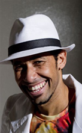

Joanna Kosinska
Lärare och grundare
Joanna Kosinska har dansat zouk lambada sedan hon bodde i São Paulo 2006. I Brasilien studerade hon även de brasilianska pardanserna forró, samba gafieira och bolero. Sedan dess har hon aktivt rest till zouk lambada-kongresser världen över. Joanna började sin dansbana inom salsa som tonåring och fortsatte att medverka i shower. Hon dansar även tango, samba, flamenco, hip hop och ragga. Joanna finns tillgänglig för privatlektioner, både för följare och förare.
Josefine Normann
Webbansvarig, administratör och formgivare
Josefine mötte zouk lambada för första gången i Gävle 2009 och året därpå började hon dansa reguljärt för Brazoukas gästlärare Claudio de Oliveira. Det var musiken hon föll för först, men så småningom fattade hon även tycke för dansens mjuka och böljande rörelser. För Josefine är musikalitet är nummer ett. Josefine har även dansat salsa i över 10 år och har setts på de flesta dansgolven i Stockholm och i hemstaden Gävle. Josefine möter du på Brazoukas mail, på våra fester och i Student Teams shower.
Mia Billqvist
Lärarassistent
För Mia, som tidigare dansade salsa, var det kärlek vid första ögonkastet när hon provade zouk lambada 2009, för dess "sköna musik" och "mjuka, uttrycksfulla dans". Sedan dess har all fokus varit på zouken. För att ständigt utvecklas tar Mia alla tillfällen i akt och åker ofta på internationella kongresser. Mia är med i Brazouka Student Team sedan hösten 2010 och assisterar även på Brazoukas kurser.
Claudio de Oliveira
Lärare (Brasilien/Argentina)
Claudio de Oliveira, brasiliansk dansare och koreograf, undervisade under höstterminen 2010 på Brazouka. Han är utbildad inom klassisk dans på danshögskola i Brasilien, med inriktning på tango och afrobrasiliansk dans, och har studerat de flesta brasilianska danser under hela sitt liv. Som lärare utmärker Claudio de Oliveira sig för att värdera teknik, kroppskontroll och danskänsla. Vi planerar ett fortsatt samarbete med undervisning i Sverige inom kort.
Annakarin Thorburn
Lärare och grundare
Annakarin Thorburn höll Sveriges första kurs i zouk lambada i Uppsala 2007. Hon är skolad i Buenos Aires och gör regelbundet dansresor dit, samt till Brasilien och Spanien. Annakarins första danspassion var karnevalssamba. Hon gick med i Samba de Souza 2003, som hon länge uppträdde för. Annakarin är inriktad på brasiliansk dans och dansar även forró, axé, funk och afrobrasilianskt. Hon är även verksam som dj inom brasiliansk musik och driver klubben Sambaía. Annakarin finns tillgänglig för privatlektioner, både för följare och förare.
Jonas Ollmar
Lärarassistent
Jonas började dansa salsa år 2006 och upptäckte zouk lambada tre år senare. Det han fastnade för var de mjuka, flytande rörelserna och utökad möjlighet till improvisation och musikanpassning. Jonas åker flera gånger per år på internationella kongresser i zouk lambada. Sedan år 2010 har han uppträtt på olika tillställningar och är även delaktig i undervisningen. Jonas är också med i Brazouka Student Team.
Cornelia Hårdberg
Lärarassistent
Cornelia har alltid brunnit för dansen. Hon började med streetdance och dancehall i tidig tonår, senare blev hon intresserad av de latinska danserna salsa och bachata, men efter en resa till Brasilien blev hennes stora passion zouk lambada. Sedan hösten 2010 har Cornelia varit en mycket engagerad dansare på Brazouka. Det unika i zouk lambada är för Cornelia känslan och samspelet mellan förare och följare, och denna dans har blivit en sorts fristad för att leva ut känslor och drömmar.
Kimmo Hamberg
Fotograf
Kimmo har i samarbete med Brazouka fotograferat våra dansare i olika typer av projekt. Med förkärlek för svartvitt, mode- och romantiska stillbilder, utomhusfotografi, olika former av artistiska fotografier och bilder i rörelse lyckas han fånga det lilla extra i stunden. För den som söker en duktig fotograf kan vi varmt rekommendera Kimmo. Se hans bilder på http://www.modelmayhem.com/1699128.